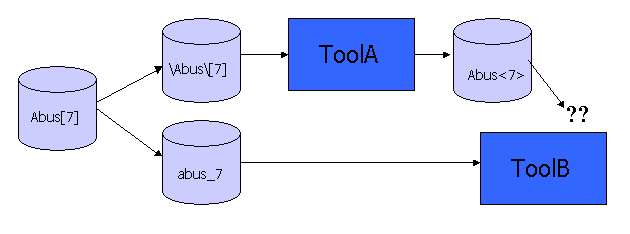
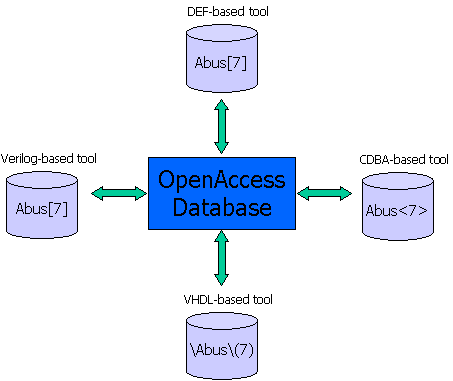

|
 |
 |
||||||
|
|
|
||||||
Names are not simply strings. All names are represented by a string PLUS the "name space" where the rules for interpreting that string are defined. A name space refers to one set of rules for creating and interpreting legal names within an application. Name mapping applies consistent, predictable naming conventions to transform names between different name spaces. The standard algorithmic one-to-one name mapping implemented in the OpenAccess database ensures that names can be mapped among all name spaces, that names do not collide, and that the meaning of names is not altered when they are mapped.
Often, applications use one given name space everywhere to make calls, access names, and so on. Other applications allow users to set the name space where they want to work, or can work in different name spaces at different times, depending on the task they are performing. The OpenAccess database supports a number of name spaces. When you use the OpenAccess API, any time you use or retrieve a name string, you specify in which name space this string belongs.
It is possible for programmers to design their own namespaces for OpenAccess to use. For guidelines on how to do this see the topic Deriving Your Own Name Space.

Ad hoc name mapping fails in a complex flow
Name mapping can be a challenge because different applications use different rules for forming names. Because it is critical for design flows to use names to reference a given object at different places in the design flow, it is also critical for a database to understand the name space where a name is used.
Some systems do not deal with name mapping internally; they are designed to simply use the names they receive and do no name manipulation inside the database. In this case, it is the user's responsibility to ensure that names are treated consistently.
The OpenAccess database includes name mapping capabilities. The responsibility for mapping names does not need to take place within the applications in the flow, but rather is handled by the database. The management of names is part of the OpenAccess database itself, so the database always understands what name space a name came from and can always appropriately change that name when you write it.
Even though the OpenAccess database maps names between applications automatically, understanding name mapping helps you recognize how names can change when you use data from other applications.
When you have to enter names in multiple places in a design flow where the names must match each other, you need to know how to form the corresponding name in multiple name spaces. For example:
cds.lib file is in the UNIX name
space.In other words, a library called MYLIB in VHDL is
subsequently used in Verilog as mylib. This library
must be defined in the cds.lib file with a statement such as:
DEFINE mylib /usr/libs/mylibdir
OpenAccess overcomes the name mapping difficulties by including a name mapping interface right in the database to avoid forcing the name mapping into the flow.

Database-centric flow with name mapping in database interface
OpenAccess uses algorithmic name mapping to map names between different name spaces.
NOTE:
Algorithmic name mapping does not solve certain problems such as mapping
names to another representation where the design has been modified.
To properly handle the variety of names in different tools, each
application applies the correct name space for each file format it handles.
A port or pin of an instance might be called
i1/addr<3:0> on a schematic. In Verilog, this name
becomes i1.addr[3:0], and in VHDL it becomes
i1:addr(3 downto 0). Each part of these names has
a specific meaning.
| Name Item | Explanation |
|---|---|
| i1 | An identifier (an instance name in this case) |
| slash ( / ), period ( . ), colon ( : ) | A hierarchy delimiter |
| addr | An identifier (a port/pin name in this case) |
| <3:0>, [3:0], (3 downto 0) | A vector expression |
The majority of EDA tools are case sensitive. However, VHDL and the Windows file system (Win) are case-insensitive name spaces.
To provide a one-to-one mapping between case-sensitive and case-insensitive
name spaces, case cannot be preserved in this mapping. For example, if a
Verilog name StopGap were to become
StopGap in VHDL, and if the Verilog name
stopgap were to become
stopgap in VHDL, then two different Verilog names
would become a single VHDL name.
To handle this situation, OpenAccess name mapping rules map all
case-insensitive letters as lowercase case-sensitive letters. Case-sensitive
uppercase letters map to escaped names in VHDL. In the Win name space, the
algorithm precedes them with a percent sign ( % ), so that the
Verilog name GORP becomes
%G%O%R%P.
If a name contains characters that are illegal in the destination name
space (even in any escaped form that name space may have), the algorithm uses
character encoding to map the names. Characters that are illegal in the
destination name space are replaced with a pound sign ( # ) followed
by the character value encoded as two hexadecimal digits (0-9 or a-f; for
example, #2a. The name a*b
is represented as a#2ab in a name space that does not
support the asterisk ( * ).
Keywords, case sensitivity, character set indexing, and hierarchy are handled differently in different name spaces. The following table shows some examples of how these components are handled.
| Differences | Examples of Name Space Rules |
|---|---|
| Keywords | The string and is a keyword in Verilog and VHDL, while process is a keyword in VHDL but not in Verilog. Many name spaces have no keywords, such as CDBA and UNIX. |
| Case Sensitivity | In VHDL, the name aaa refers to the same object as AAA. In CDBA or UNIX, these names are different. |
| Syntax and Characters | Many name spaces have an alternative way to include characters in names that would otherwise be illegal. In VHDL, \a+b*\ is a legal name because the backslashes ( \ ) escape the characters that are otherwise illegal. A normal Verilog name can contain a dollar sign ( $ ), but a VHDL name cannot unless it is escaped. |
| Bit Indices | Some name spaces have a way to indicate a name that is a particular bit of a vector. The syntax for these names and the characters used to set off the bit index from the rest of the name are different in different name spaces. The syntax for indicating a range of names in a vector also varies among name spaces. For example, <4>, [4], and (4) are all ways that certain name spaces use to indicate bit 4 of a vector. In some name spaces, the bit index character can be set by the caller. |
| Hierarchy | When using hierarchical designs, different name spaces use different hierarchy separators to indicate the hierarchical levels of a name. Theslash character ( / ) and period character ( . ) are common hierarchy characters. In some name spaces, the hierarchy character can be set by the caller. |
OpenAccess uses the following name mapping patterns when it implements a namespace:
abc is left the same in every supported name space.2d (a minus sign) becomes #2d.ESC_ to the mapped name. For example, in VHDL, \aaa\ is a different name from aaa, so they cannot both map to aaa in Verilog. The name mapping rules map a VHDL \aaa\ to ESC_aaa in Verilog.In the following examples, the  character in Verilog names is used to clearly document a blank space.
character in Verilog names is used to clearly document a blank space.
| Type | Native | VHDL | Verilog | CDBA | LEF/DEF | SPEF | SPF | UNIX | Win | Spice |
|---|---|---|---|---|---|---|---|---|---|---|
| lowercase or case insensitive | bigchip | bigchip BIGCHIP |
bigchip | bigchip | bigchip | bigchip | bigchip | bigchip | bigchip BIGCHIP |
bigchip BIGCHIP |
| case sensitive mixed case | BigChip | \BigChip\ | BigChip | BigChip | BigChip | BigChip | BigChip | BigChip | %Big%Chip | %Big%Chip |
| keyword | and | \and\ | \and |
and | and | and | and | and | and | and |
| unneeded escape | ESC_trash | \trash\ | ESC_trash | ESC_trash | ESC_trash | ESC_trash | ESC_trash | ESC_trash | %E%S%C_trash | ESC_trash |
| embedded space | foo bar | \foo bar\ | \foo#20bar |
foo#20bar | foo%20bar | foo#20bar | foo#20bar | foo#20bar | foo#20bar | foo#20bar |
| device names | aux | aux | aux | aux | aux | aux | aux | aux | %%aux | aux |
| back-slash | \a\b | \\\a\\b\ | \\a\b |
#5ca#5cb | \\a\\b | \\a\\b | \\a\\b | #5ca#5cb | #5ca#5cb | #5ca#5cb |
| bit index | [ ] | ( ) | [ ] | < > | [ ] | [ ] | scalar only by default | not applicable |
not applicable |
[ ] |
| hierarchy | / | : | . | ` | / | / | / | not applicable |
not applicable |
. |
| forward slash | #2fa#2fb | \/a/b\ | \/a/b |
#2fa#2fb | \/a\/b | \/a\/b | \/a\/b | #2fa#2fb | #2fa#2fb | a/b |
| special characters* | a<1#3a2> | \a<1:2>\ | \a<1:2> |
a#3c1:2#3e | a<1:2> | a\<\:2\> | a<1\:2> | a#3c1#3a2#3e | a#3c1#3a2#3e | a<1:2> |
* Although the special characters look similar to a name
with an index expression, this row shows a name, with special characters,
that is being used as an atomic name. The
character indicates a blank space.
OpenAccess natively supports the following name spaces:
The general-purpose Native name space is case sensitive. This name space supports all types of names: hierarchical, scalar, vectorBit, vector, stepped, and bundle. There are no keywords in the Native name space. This name space does not support an escaped form.
All alphanumeric characters and symbols are allowed as Native normal names except the open bracket ( [ ), close bracket ( ] ), forward slash ( / ), colon ( : ), asterisk ( * ), pound ( # ), and comma ( , ).
When the hex delimiter appears in a Native name, it must be followed by two hex digits. The hex digits must only encode illegal characters or the hex delimiter in the Native name space.
For bundle names, commas ( , ) are used to separate the elements in the bundle. Also, any element can have a repeat count expressed as an integer and an asterisk ( * ) at the beginning of the name. If a bundle name is hierarchical, the hierarchy must be expressed on each element of the bundle name. For example, if the original bundle name is
2*U,V[2],V[4:5]
then in a hierarchy (say A1/B1), this name can be specified as
2*A1/B1/U,A1/B1/V[2],A1/B1/V[4:5]
Each VHDL name is either in the normal form, ABC,
or the escaped form \ABC\. Most names in a VHDL
design are VHDL normal names. This name space does not support stepped or
bundle names.
VHDL normal names are case insensitive. This means that the name
AbC and the name abc are
equivalent, and refer to the same object. VHDL normal names can contain
letters, digits, or the underscore character. The first character must be a
letter. All alphanumeric characters are allowed as VHDL normal names. The
only symbol that is allowed is the underscore. The space is not allowed.
VHDL escaped names are case sensitive, unlike normal VHDL names. Escaped
names always begin and end with a backslash ( \ ). This means that
the name \AbC\ and the name
\aBc\ refer to two different objects.
A name in the VHDL normal name space and the same name in the VHDL escaped
name space do not represent the same object. For example, the VHDL name
abc and \abc\ refer to two
different objects. To embed a backslash in an escaped name, use double
backslashes.
If the original name was in the VHDL escaped form even though it was legal
in the VHDL normal form, it must be returned to the escaped form, not the
normal form. For example, \abc\ maps to CDBA
ESC_abc, and it maps back to
\abc\ in VHDL.
All alphanumeric characters and symbols, as well as spaces, are allowed as VHDL escaped names.
Each Verilog name is either in the normal form,
ABC, or the escaped form
\ABC. (Note: In this document, the character in Verilog names
is used to clearly document a blank space.) Most names in a Verilog design are Verilog normal
names. If you need to represent names that are illegal as Verilog normal
names, use the Verilog escaped name space. For example, the name
and in the CDBA name space maps to the Verilog
escaped name \and because and
is a Verilog keyword. All Verilog names are case sensitive. This means that
the name AbC and the name abc
refer to two different objects. This name space does not support stepped or
bundle names.
Verilog normal names can contain letters, digits, the underscore character, and the dollar sign ( $ ). The first character cannot be a digit or a dollar sign. All letters and digits are allowed as Verilog normal names. The space is not allowed.
Verilog escaped names always begin with a backslash ( \ ) and end
with a space. Verilog escaped names are also case sensitive. This means that
the name \AbC
and the name
\aBc
refer to two different objects.
Although any name can be escaped, only those names that might not be
represented in the Verilog normal name space due to character restrictions or
keywords must be escaped. A name in the Verilog normal name space and the
exact same name in the Verilog escaped name space represent the same object.
For example, the Verilog name abc and
\abc refer
to the same object.
All alphanumeric characters and symbols are allowed in Verilog escaped names.
CDBA names are case sensitive. This means that the name
AbC and the name abc
refer to two different objects. There are no keywords in CDBA. This name
space supports all types of names: hierarchical, scalar, vectorBit, vector,
stepped, and bundle. This name space does not support an escaped form.
All alphanumeric characters and symbols are allowed as CDBA names except the comma ( , ), backslash ( \ ), forward slash ( / ), colon ( : ), back tick (`), and opening ( < ) and closing ( > ) angle brackets. Leading and trailing spaces are allowed, but embedded spaces are not. Opening and closing parentheses are allowed if they are not preceded by a delimiter and only if they enclose digits.
CDBA-based applications (that support physical hierarchy) represent physical hierarchy from multiple oaDesigns with a slash (/). However, this form of hierarchy representation is not provided by the OpenAccess name-mapping functions. The OpenAccess CDBA namespace uses a back tick (`) as the hierarchy delimiter instead, and most applications regard this as a flattened name without hierarchy. It is the responsibility of the application to manage this.
A multiple-bit net name can be a bundle, a bus, or a combination of both. You can improve readability in your designs by shortening multiple-bit net names.
To indicate that multiple bits of one net carry similar information, give each bit the same base name, then add a suffix to each bit name to distinguish the signals.
For example, to show four bits of a net with a common base name
(DATA), but with individual suffixes (<0>,
<1>, <2>, and <3>),
assign the following names:
DATA<0> DATA<1> DATA<2> DATA<3>
To name a wire that contains multiple signals with the same base name, specify the base name followed by a vector expression. The vector expression can be:
DATA<2,1,0> represents
DATA<2>, DATA<1>, and
DATA<0>.For example, DATA<1:7:2> represents
DATA<1>, DATA<3>, DATA<5>, DATA<7>
Use a positive integer for incrValue. If you do not specify
an increment value, the default is 1.
The ordering of the bits in a bus is important when you are connecting the bus to a pin that has a width greater than 1.
The system evaluates vector expressions in multiple-bit net names as follows:
DATA<0:3:2> names a 2-bit bus
containing DATA<0> and DATA<2>.DATA<1:3:2> names a 2-bit bus
containing DATA<1> and DATA<3>.DATA<0:3> and
DATA<0:3:1> are equivalent names that generate a 4-bit bus
containing DATA<0>, DATA<1>,
DATA<2>, and DATA<3>.DATA<2:0> generates a 3-bit bus
that contains DATA<2>, DATA<1>, and
DATA<0>.A multiple-bit net name can be a bundle, a bus, or a combination of the two. You can improve readability in your designs by shortening multiple-bit net names.
You can repeat a single signal name, a group of signal names, or a vector term any number of times in the net name by placing a prefix repeat operator <*n> in front of the name, where n is a positive integer that defines the number of times to repeat each bit in the vector term.
<*2>A,B,C A,A,B,C
<*2>(A,B),C A,B,A,B,C
<*2>(A,<*2>(X,Y)),B
expands to A,X,Y,X,Y,A,X,Y,X,Y,B.A multiple-bit net name can be a bundle, a bus, or a combination of both. You can improve readability in your designs by shortening multiple-bit net names using vector expressions.
A suffix repeat operator is a number, <*n>, after a vector term, where n is a positive integer that defines the number of times to repeat each bit in the vector term.
A<0:2*2> A<0*2,1*2,2*2> A<0,0,1,1,2,2>
A<(0:2)*2> A<0:2,0:2> A<0,1,2,0,1,2>
The LEF name space is case sensitive, with programmable bus characters. There are no keywords, as keywords in LEF are position sensitive. This name space does not support hierarchical, vector, stepped or bundle names.
The DEF name space is case sensitive, with programmable bus characters and a programmable hierarchy character. The default bus characters are opening ( [ ) and closing ( ] ) square brackets. The default hierarchy character is a forward slash ( / ). This name space does not support vector, stepped, or bundle names. There are no keywords, as keywords in DEF are position sensitive.
With the exception of the space character, the newline character, and the semicolon ( ; ), names containing characters that are illegal in the LEF and DEF name spaces can be escaped using the backslash ( \ ) character. This is a single-character escape, so each non-normal character must be escaped individually. If a bus delimiter or hierarchy character is escaped, it loses it meaning regarding busses or hierarchy and is just another character in the name.
The LEF/DEF name space does not support multi-bit names. An oacVectorNameInvalid exception is thrown if the LEF/DEF name space is used to get a string from a vector name. An oacBundleNameInvalid exception is thrown if the LEF/DEF name space is used to get a string from a bundle name.
In addition, the LEF name space does not support hierarchical names or indexed names. oacHierNameInvalid and oacIndexedNameInvalid exceptions are thrown respectively.
A name with a double vector notation (name[1][2]) becomes a vectorBitName with the first bus notation escaped internally (name\[1\][2]).
A name with a bus notation in the middle of the name becomes a scalarName with the bus notation escaped (name[1]a becomes name\[1\]a internally).
When getting the string from the name, the escaping is undone, so you get the original name back.
The SPEF name space is case sensitive, with a programmable pin delimiter character, hierarchy character, and bus delimiter characters. Since the SPEF name space describes scalar connectivity, there is no bit delimiter or repeat operator.
SPEF normal names can include all alphanumeric characters, the underscore character ( _ ), and the declared delimiter characters without escaping. This name space does not support vector, stepped, or bundle names. There are no keywords.
The pin delimiter separates the instance and terminal portions of a path name. The period ( . ), forward slash ( / ), colon ( : ), or pipe ( | ) characters can be used as a pin delimiter. The default pin delimiter character is a colon ( : ).
The hierarchy character delimits the hierarchy. The period ( . ), forward slash ( / ), colon ( : ), or pipe ( | ) characters can be used as a hierarchy delimiter. The default hierarchy delimiter character is a forward slash ( / ).
The bus delimiter characters specify the opening and closing bus values. The following characters can be used as bus delimiters:
| Open | { | ( | < | : | . | [ |
| Close | } | ) | > | : | . | ] |
The default bus characters are the opening ( [ ) and closing ( ] ) square brackets. The bus delimiter characters cannot be the same as the hierarchy or pin delimiter characters. The closing bus character must be paired with the corresponding opening bus character. If the opening bus character is a colon ( : ) or a period ( . ), the closing bus character can be omitted.
The SPEF name space does not support multi-bit names. An oacVectorNameInvalid exception is thrown if the SPEF name space is used to get a string from a vector name. An oacBundleNameInvalid exception is thrown if the SPEF name space is used to get a string from a bundle name.
The backslash ( \ ) is the escape character in the SPEF name space. This is a single-character escape, so each non-normal character must be escaped individually. If a bus delimiter or hierarchy character is escaped, it loses it meaning regarding busses or hierarchy and is just another character in the name. An escaped regular character simply maps to itself. The following special characters must be escaped on a character-by-character basis in the SPEF name space:
" ! # $ % & ' ( ) * + , - . / : ; < = > ? @ [ \ ] ^ { } ~
A name with a double vector notation (name[1][2]) becomes a vectorBitName with the first bus notation escaped internally (name\[1\][2]).
A name with a bus notation in the middle of the name becomes a scalarName with the bus notation escaped (name[1]a becomes name\[1\]a internally).
When getting the string from the name, the escaping is undone, so you get the original name back.
The SPF name space is case sensitive, with a programmable pin delimiter character, hierarchy character, and bus delimiter characters. Since the SPF name space describes scalar connectivity, there is no bit delimiter or repeat operator.
SPF normal names can include all alphanumeric characters, the underscore ( _ ), and the declared delimiter characters without escaping. Spaces, tabs, and newline characters are not allowed. This name space does not support vector, stepped, or bundle names. There are no keywords.
The pin delimiter separates the instance and terminal portions of a path name. Any printable character can be used as a pin delimiter. The default pin delimiter character is a colon ( : ).
The hierarchy character delimits the hierarchy. Any printable character can be used as a hierarchy delimiter. The default hierarchy delimiter character is a forward slash ( / ).
The bus delimiter characters specify the opening and closing bus values. Any printable character can be used as a bus delimiter. There is no default bus delimiter character. If no bus delimiter characters are defined, no names are interpreted as bus bits.
The SPF name space does not support multi-bit names. An oacVectorNameInvalid exception is thrown if the SPF name space is used to get a string from a vector name. An oacBundleNameInvalid exception is thrown if the SPF name space is used to get a string from a bundle name.
The backslash ( \ ) is the escape character in the SPF name space. This is a single-character escape, so each non-normal character must be escaped individually. If a bus delimiter or hierarchy character is escaped, it loses it meaning regarding busses or hierarchy and is just another character in the name. An escaped regular character simply maps to itself. The following special characters must be escaped on a character-by-character basis in the SPF name space:
" ! # $ % & ' ( ) * + , - . / : ; < = > ? @ [ \ ] ^ { } ~
In the FileSys DM system, cell names and view names are written as directories using the appropriate name space for each file system. For cells and views stored on UNIX systems, this is the UNIX namespace. For cell and views stored on windows systems, this is the Windows namespace.
The UNIX name space is used for library names in lib.defs files. It is also used for cell and view directory names in libraries that are stored on UNIX systems. This name space does not support hierarchical, indexed, vector, stepped, or bundle names. The UNIX name space follows the rules for creating directory names on UNIX systems, except that it is more restrictive. Many characters, such as the period ( . ) and the comma ( , ) that are legal in the file system are not allowed in the UNIX name space.
The UNIX name space is a case sensitive name space; for example, the
filenames abc and AbC refer
to different directories.
All alphanumeric characters plus the underscore ( _ ), at sign ( @ ), and pound sign ( # ) are allowed in UNIX names.
UNIX uses the pound sign ( # ) followed by two hex digits to map characters that are otherwise illegal.
The Unix name space does not support multi-bit names. An oacVectorNameInvalid exception is thrown if the Unix name space is used to get a string from a vector name. An oacBundleNameInvalid exception is thrown if the Unix name space is used to get a string from a bundle name. In addition, hierarchical names or indexed names are not supported. oacHierNameInvalid and oacIndexedNameInvalid exceptions are thrown respectively.
The Windows name space is used for cell and view subdirectories on Windows
libraries. Windows is a case-insensitive name space, but case-preserving.
This means the filenames abc and
AbC are the same file, and only one of them can
exist in any given directory. This name space does not support hierarchical,
indexed, vector, stepped, or bundle names.
The Windows name space allows digits, the underscore character ( _ ), the at sign ( @ ), the percent sign ( % ) if followed by an uppercase letter or keyword, and the pound sign ( # ). Several names are reserved by Windows. These can be thought of as keywords that are illegal names. The keywords are:
aux con com0 - com9 lpt0 - lpt9 nul prn
Windows uses the pound sign ( # ) followed by two hex digits to map characters that are otherwise illegal.
Windows uses the percent sign ( % ) to map case-sensitive
uppercase letters. An X in Verilog becomes
%X in Windows.
Windows also uses the percent sign ( % ) to map names that would
otherwise look like reserved names. For example, a cell named
lpt4 in a UNIX library is called
%%lpt4 in a Windows library.
The Windows name space does not support multi-bit names. An oacVectorNameInvalid exception is thrown if the Windows name space is used to get a string from a vector name. An oacBundleNameInvalid exception is thrown if the Windows name space is used to get a string from a bundle name. In addition, hierarchical names or indexed names are not supported. oacHierNameInvalid and oacIndexedNameInvalid exceptions are thrown respectively.
The Spice name space is case insensitive and case preserving. The name space supports hierarchical, scalar, and vectorBit names. This name space does not have keywords since keywords in Spice are position sensitive. This name space does not support vector or bundle names.
Spice normal names must begin with an alphabetical character or one of the following symbols:
# ! _ %
To map two unequal strings from a case sensitive name space to two unequal names in oaSpiceNS, the % character is used as an upper case delimiter. The strings abc and Abc in nativeNS map respectively to abc and %Abc in oaSpiceNS.
If a name is initialized in oaSpiceNS with the strings %Abc or %abc, this is mapped to Abc in a case sensitive name space such as oaNativeNS. If the % character is followed by an alphabetical character, the alphabetical character is mapped to an uppercase alphabetical character in any other case sensitive name space. If the % character is followed by any other character, for example a numeric such as %1Abc from a Spice name, it is mapped to %1abc in oaNativeNS.
Spice normal names can include all alphanumeric characters and the following symbols:
+ - * / : ; $ # ! < > _ % [ ]
When a string ends with the open ( [ ) and close ( ] ) square brackets enclosing nothing but digits, the [ and ] are interpreted as bus delimiter characters in Spice. The string is interpreted as a vectorBit name in this case. On the other hand, a string with square brackets that enclose characters other than digits is interpreted as a scalar name in Spice. For example, the string 'a[0]' is a vectorBit name in Spice, while the string 'a[abc]' and 'a[4:3] are just scalar names in Spice.
The Spice name space does not support multi-bit names. An oacVectorNameInvalid exception is thrown if the Spice name space is used to get a string from a vector name. An oacBundleNameInvalid exception is thrown if the Spice name space is used to get a string from a bundle name.
The hierarchy character ( . ), delimits the hierarchy.
The Spice name space uses the pound sign ( # ) followed by two hex digits to map characters that are otherwise illegal.
Return to Programmers Guide topics

Copyright © 2001-2010 Cadence Design Systems, Inc.
All rights reserved.